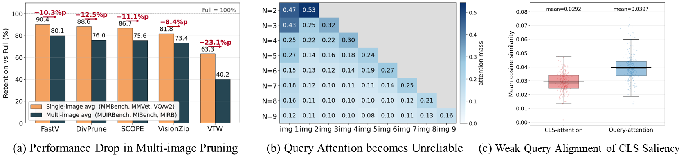
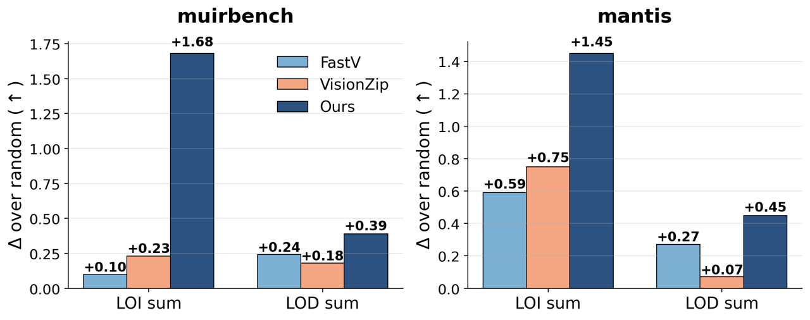
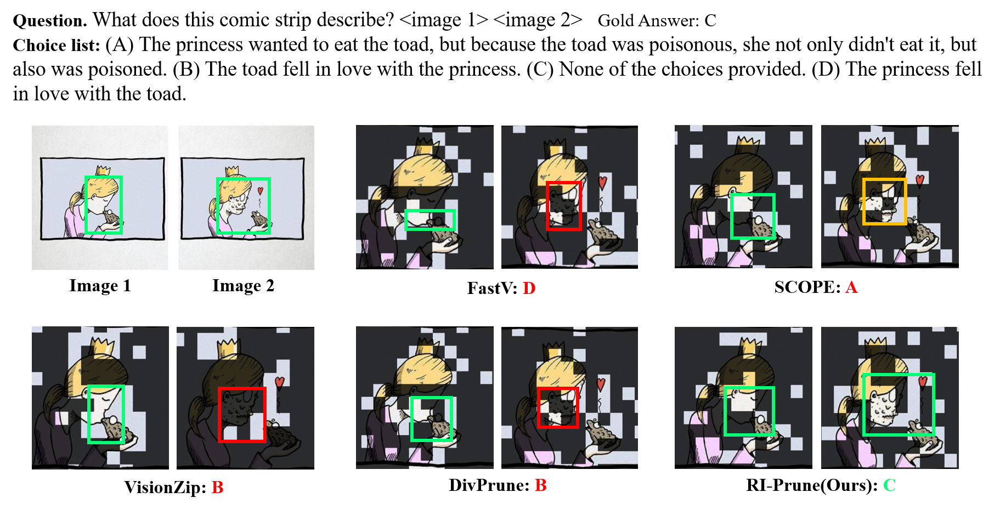

RI-Prune: Relation and Information Aware Visual Token Pruning for Multi-Image Vision-Language Models
Chung-Ang University, Seoul, Republic of Korea
*Corresponding author · ybkim85@cau.ac.kr

Abstract
Attention is a weak proxy for token importance across images
Large vision-language models (LVLMs) have recently been extended to handle multiple input images, but this extension dramatically increases the visual token budget, making visual-token pruning not merely an efficiency option but a practical necessity. Existing visual-token pruning methods, primarily designed for the single-image setting, rely on attention-derived saliency signals to estimate per-token importance. However, this attention-centric design transfers poorly to the multi-image regime: it causes substantial performance degradation on multi-image benchmarks, suffers from strong positional bias, and loses discriminative attention signals as the number of input images increases. To test whether attention-selected tokens are truly important for multi-image reasoning, we conduct two complementary causal probes Leave-One-In and Leave-One-Deletion, which measure token importance by restoring individual tokens to a zeroed visual sequence or removing them from the full sequence. Attention-based pruners provide only marginal gains over random selection, showing that attention is a weak proxy for visual-token importance in multi-image reasoning. Motivated by this gap, we propose Relation and Information Aware Pruning (RI-Prune), a training-free, attention-free pre-decoder selector for multi-image visual token pruning. RI-Prune scores each visual token using a z-normalized combination of three signals computed from projector outputs: query relevance, cross-image correspondence with compact per-image prototypes, and intra image representativeness. By integrating these signals, RI-Prune performs balanced per-image Top-K selection to preserve information across input images. Across multiple multi-image benchmarks and three LVLM backbones, RI-Prune achieves a stronger trade-off between token reduction and task performance than prior pruning methods, particularly under aggressive token budgets.
Motivation
Do attention-selected tokens actually carry the answer?
We test token importance causally. Masking a token replaces its embedding with a zero vector while keeping its position, and we read the logit of the first gold-answer token \(g_1\).
Leave-One-In (LOI)
Start from a fully zeroed visual sequence and restore a single token \(v_k\). How much evidence does that token add on its own?
Leave-One-Deletion (LOD)
Start from the full visual sequence and mask only \(v_k\). How much does the answer logit drop without it?
A pruner \(\mathcal{M}\) is scored by summing the importance of the tokens it keeps under budget \(B\): \(\mathcal{I}_*(\mathcal{M}; x, B) = \sum_{k \in S_{\mathcal{M}}(x,B)} I_*(v_k)\), with \(* \in \{\mathrm{LOI}, \mathrm{LOD}\}\).

Method
Score tokens in embedding space, not attention space
RI-Prune sits at the projector–decoder interface and runs once, before the first decoder layer. Each visual token gets three signals from the projector outputs, which are z-normalized and fused. The budget is then split across images so that every image keeps its evidence.

Three signals per visual token
\(V^{(a)}\) denotes the tokens of image \(a\). Each image is split into \(P\) contiguous chunks whose means form compact prototypes \(\mathcal{P}^{(a)} = \{p_1^{(a)}, \dots, p_P^{(a)}\}\). All similarities are cosine similarities.
rQuery relevance
Is the token related to anything the question asks about?
cCross-image correspondence
Does the token match content in the other images, the relations multi-image questions rely on?
uIntra-image representativeness
Does the token represent a rare region of its own image? Assign it to its closest prototype \(m_i\), then weight the alignment by how uncommon that prototype is.
with \(s_i = \max\big(0, \cos(v_i, p_{m_i}^{(a)})\big)\) and \(n_m^{(a)}\) the number of tokens assigned to prototype \(m\).
Fusion and balanced selection
- Normalize. Each signal is z-scored over all visual tokens of the current input, so no single signal dominates by scale.
$$z_x(v_i) = \frac{x(v_i) - \mu_x}{\sigma_x + \epsilon}, \qquad x \in \{r, c, u\}$$
- Fuse. A weighted sum gives the final score (we use \(\lambda_r = \lambda_c = \lambda_u = 1\) and \(P = 16\) for every model and benchmark).
$$S(v_i) = \lambda_r\, z_r(v_i) + \lambda_c\, z_c(v_i) + \lambda_u\, z_u(v_i)$$
- Select per image. The global budget \(B\) is split into near-equal quotas \(B^{(a)}\) (differing by at most one token), and each image keeps its own Top-K.
Kept tokens go to the decoder in their original order.
$$R = \bigcup_{a=1}^{N} \operatorname{TopK}_{B^{(a)}}\big(\{v_i \in V^{(a)}\};\, S\big)$$
Results
Stronger accuracy–efficiency trade-off across three backbones
Four multi-image benchmarks (Mantis-Eval, MIBench, MIRB, MUIRBench), compared against FastV, VisionZip, VTW, DivPrune and SCOPE. The gap grows as the budget gets tighter.
Bold: best among pruning methods · underline: second best.
Analysis
Efficiency, ablations and qualitative results
Efficiency (Qwen2.5-VL)
| Method | Retained | TFLOPs | Latency | Avg. Acc. |
|---|---|---|---|---|
| Qwen2.5-VL (all tokens) | 100.0% | 57.8 | 8.135 s | 63.1 |
| FastV | 4.6% | 11.4 | 7.728 s | 44.9 |
| DivPrune | 4.6% | 8.8 | 8.074 s | 48.4 |
| SCOPE | 4.6% | 8.9 | 7.953 s | 48.7 |
| VisionZip | 4.6% | 8.4 | 5.217 s | 46.8 |
| VTW | 4.6% | 8.5 | 5.125 s | 22.9 |
| RI-Prune (Ours) | 4.6% | 7.9 | 5.124 s | 50.7 |
| FastV | 23.5% | 13.4 | 8.128 s | 56.8 |
| DivPrune | 23.5% | 10.79 | 8.774 s | 59.5 |
| SCOPE | 23.5% | 10.79 | 8.153 s | 57.3 |
| VisionZip | 23.5% | 10.35 | 5.557 s | 54.7 |
| VTW | 23.5% | 10.64 | 5.636 s | 35.4 |
| RI-Prune (Ours) | 23.5% | 10.35 | 5.554 s | 60.7 |
Bold marks the best value within each retained-token setting.
Every signal helps
| Variant | \(\lambda_r\) | \(\lambda_c\) | \(\lambda_u\) | Acc. | Δ |
|---|---|---|---|---|---|
| Random | 0 | 0 | 0 | 40.1 | −10.6 |
| \(r\) only | 1 | 0 | 0 | 44.6 | −6.1 |
| \(c\) only | 0 | 1 | 0 | 43.1 | −7.6 |
| \(u\) only | 0 | 0 | 1 | 42.4 | −8.3 |
| \(r + c\) | 1 | 1 | 0 | 48.6 | −2.1 |
| \(r + u\) | 1 | 0 | 1 | 41.8 | −8.9 |
| \(c + u\) | 0 | 1 | 1 | 45.5 | −5.2 |
| \(\lambda_r = 0.5\) | 0.5 | 1 | 1 | 49.5 | −1.2 |
| \(\lambda_c = 0.5\) | 1 | 0.5 | 1 | 49.8 | −0.9 |
| \(\lambda_u = 0.5\) | 1 | 1 | 0.5 | 50.2 | −0.5 |
| Full \((r + c + u)\) | 1 | 1 | 1 | 50.7 | – |
Qwen2.5-VL, 4.6% retained tokens, average over the four benchmarks.
Design choices
| Selection mode | Acc. | Overhead |
|---|---|---|
| Global Top-K | 48.8 | 0.909 s |
| Global + min quota | 50.3 | 0.922 s |
| Per-image Top-K (Ours) | 50.7 | 0.920 s |
| Prototypes \(P\) | 2 | 4 | 8 | 16 | 64 | 128 |
|---|---|---|---|---|---|---|
| Acc. | 45.6 | 46.9 | 47.7 | 50.7 | 51.0 | 48.7 |
| Compute (ms) | 3.4 | 3.5 | 3.8 | 4.4 | 8.2 | 11.6 |
Balanced per-image quotas beat global selection at the same cost. \(P = 16\) is the default: near-best accuracy at half the cost of \(P = 64\).
Beyond images: video
| Benchmark | Vanilla | FastV | DivPrune | SCOPE | VisionZip | VTW | Ours |
|---|---|---|---|---|---|---|---|
| Video-MME | 63.0 | 49.3 | 52.2 | 47.8 | 44.9 | 23.2 | 52.9 |
| TempCompass | 67.0 | 59.8 | 63.0 | 59.0 | 55.0 | 33.0 | 61.0 |
Qualitative comparison on MUIRBench

Citation
BibTeX
@inproceedings{lee2026riprune,
title = {RI-Prune: Relation and Information Aware Visual Token Pruning for Multi-Image Vision-Language Models},
author = {Lee, Dongjin and Lee, Eunju and Jang, Jinhee and Lee, Yoonji and Kim, Youngbin},
booktitle = {Proceedings of the 35th ACM International Conference on Information and Knowledge Management},
series = {CIKM '26},
year = {2026},
address = {Rome, Italy},
publisher = {ACM},
doi = {10.1145/3799682.3841123},
eprint = {2611.06047},
archivePrefix = {arXiv}
}